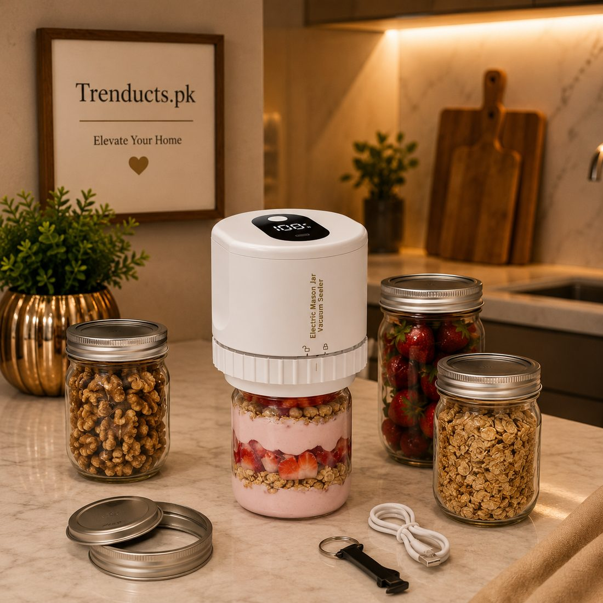
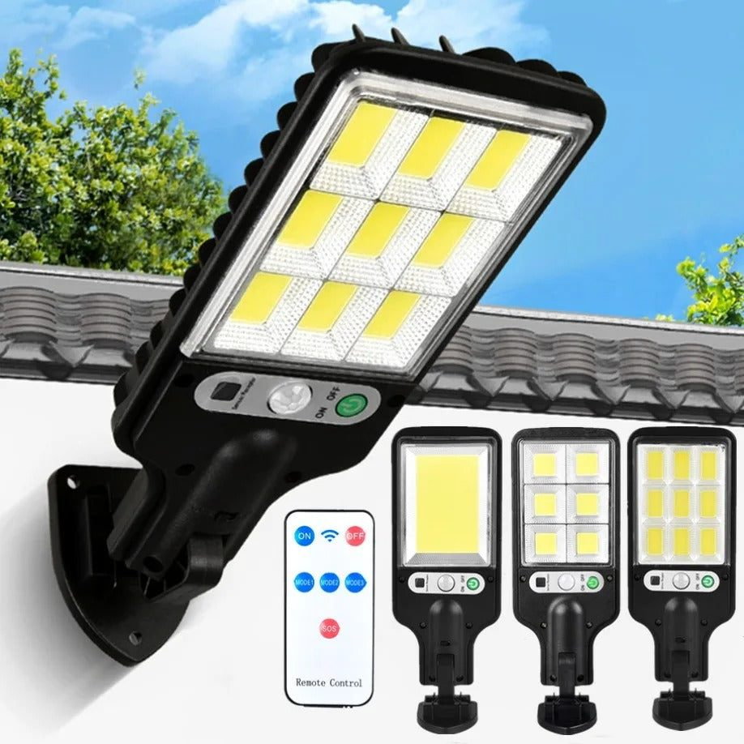

Smart home technology is often shown as voice assistants, phone-controlled lights and robotic everything. In Pakistan, the reality is different. Internet can be patchy, power cuts are common, and many families are cautious about paying for gadgets that need constant setup. Yet some smart devices genuinely make everyday life easier, especially those that work independently, save time or deal with local problems like load-shedding. This guide focuses on practical gadgets rather than flashy ones.
What makes a gadget useful here
Before buying any smart device, ask a few questions:
- Does it work without Wi-Fi or an app, or at least offline when the internet is down?
- Does it handle power cuts, with a battery or solar backup?
- Is it simple enough for elderly parents to use?
- Does it solve a real, repeated problem?
Gadgets that pass this test are likely to be used daily rather than left in a drawer.
Smart pill organisers for elders
Many Pakistani households care for elderly parents who take several medicines a day. Remembering which tablet to take when is difficult, and missed doses can be serious. A weekly pill organiser with alarms beeps at set times and has compartments for each day and dose. It works independently, without a phone, which makes it ideal for elders who are not comfortable with apps. Family members can fill it once a week and know the routine is covered.

Electric jar vacuum sealers
Food waste is a concern in every kitchen. An electric vacuum sealer removes air from jars and containers, helping dry foods, spices, nuts, coffee and leftovers stay fresh longer. In humid cities like Karachi, it also keeps biscuits and snacks crisp. Rechargeable models are compact and easy to use with a single button.
Solar lights with remote control
Load-shedding remains a fact of life in many areas. Solar-powered outdoor lights charge during the day and switch on automatically at night, lighting gates, porches, rooftops and gardens without adding to the electricity bill. Models with a remote control let you change brightness and timer modes. They also improve security around the house when the grid power goes off.
Smart plugs and timers
Where Wi-Fi is reliable, smart plugs let you schedule appliances like water motors, geysers and lamps. Even simple mechanical or digital timers achieve much of the same benefit without the internet. Running the water motor on a timer, for example, prevents tanks overflowing on the roof.

Sensor lights for stairs and cupboards
Motion-sensor LED lights are inexpensive and very practical. Stick them inside wardrobes, kitchen cabinets, along staircases or in corridors. They turn on when someone passes and off automatically, helping elders and children at night. Rechargeable versions keep working during load-shedding.
Health and comfort gadgets
Smart wellness gadgets, such as heated massage belts and posture devices, can bring relief for back pain and long days at a desk. Choose devices with safety auto-off features and clear temperature controls.
Security basics
Wi-Fi cameras and video doorbells are becoming popular in Pakistani cities. If you install them, change default passwords, update firmware and be careful about where recordings are stored. Ensure cameras respect neighbours' privacy.
Avoiding gadget clutter
It is easy to buy gadgets that end up unused. Start with one problem, such as medicines, food freshness or lighting during power cuts, and solve it well. Add more only when the first device has proven its value in daily life.
Smart gifts
Practical smart gadgets make thoughtful gifts. A pill organiser for grandparents, a vacuum sealer for a home baker, or solar lights for a family that has just built a house show care and usefulness.
Energy savings that add up
With electricity bills rising steeply, smart gadgets that cut consumption pay for themselves. Solar lights replace bulbs running all night, timers stop motors and geysers running longer than needed, and LED sensor lights only switch on when someone passes. Keep a simple notebook of your monthly units before and after adding such devices; many families are pleasantly surprised by the difference over a summer.
Explore the range
Pill organisers, vacuum sealers, solar lights and other smart home gadgets are available at Trenducts.pk, delivered across Pakistan. Choose the gadgets that fit your home's real needs and enjoy the convenience.